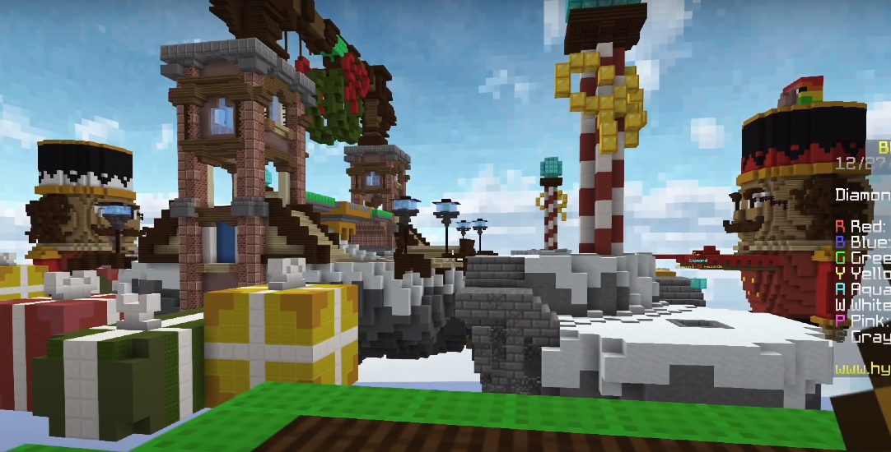
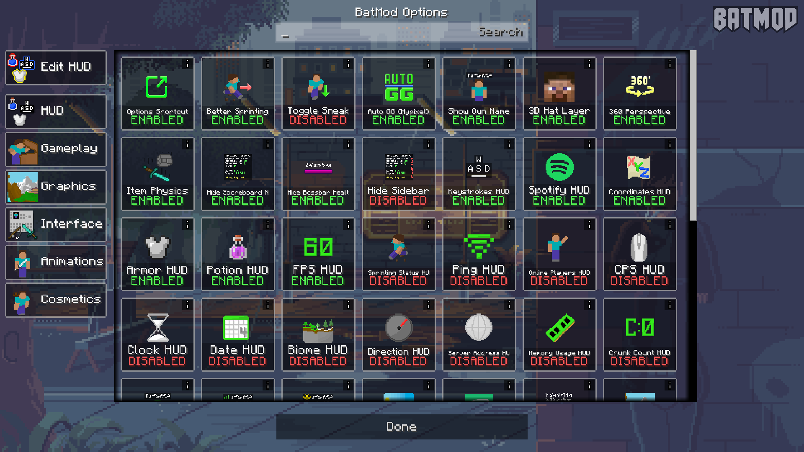

Hola! First off, What are Minecraft Clients?
In Minecraft, the client is your local game running on your machine, and is in charge of all local calculations, such as graphics, audio, and UI (User Interface), as well as some of the server calculations too, because the client runs a local semi-copy of the server, which is there to bring down the amount of bandwidth
~ Minecraft Fandom
Simply it provides a good boost in fps and features like customisable hoods, skins, capes, tags, clans and Some Mods(Don't try that,You'll get banned.)
So here are the Top 5 Best Free Fps Boost Clients for Cracked Minecraft.

Salwyrr
"Salwyrr , the sun is rising" as they say, it might be a Sunrise for your dull and Slow Minecarft without having to pay for those expensive clients. It is free account, or an "offline" account, it does not need Mojang authentication. This accounts allow you to play Minecraft offline or in servers that have disabled "online-mode". But don't be happy too early to be able to play on premium servers like Hypixel and Mineplex you will need to buy Official Mojang account.
As the site says, Salwyrr is 2.5x times faster than other clients, although not completely true but it is some real deal to get the performance Salwyrr provides.
Official Website➜ Salwyrr.com
LabyMod
It is the toughest competition to Salwyrr at the time. Both LabyMod and Salwyrr are neck to neck when it comes to popularity. Although it is very hard to compare both of them, it is true that LabyMod does provide some really cool features which no other client might provide, Such as Voice Chat and Mini-games like Rocket-shoot and Snakes(Literally).
They both provide the same fps boost and it's just a war between LabyMod and Salwyrr users at this point. But I personally have been using LabyMod on my Low-End pc and it works pretty good. Salwyrr is more of a High-End pc client.
Using LabyMod with Forge might help you get more frames.
Official Website➜ LabyMod Client
Ares Free Client
Ares offer free cosmetics, various mods and a minimalistic user interface, but you can discover all that for yourself if you want!
Ares is under continuous development to provide the best in game experience to its users. The Beta version Ares 1.8 (140mb) is currently thier most used and most stable version with all features available, but they are working on a newer and better version Ares 3.0 and it would be out soon with a better user interface.
Official Site➜Ares Client
BatMod
It is a community created client. It looks just like Vanilla. Honestly it is not the best free clients out there but is pretty good to try. Has spotify connect, 1.7 animations, customisable HUD's and also auto GG's for Hypixel. It does boosts your fps. What Else!
Official Website➜batmod.com

Image Source ~ batmod.com
cm-pack
Its first interface looks exactly like Ares. It is good enough to say it's an Ares Light version.It takes only 7.6 MB. Which is very little as compared to other clients. They are soon providing skins for Non-Premium although all of the above clients provide it already. But they do have wings and static capes for free.